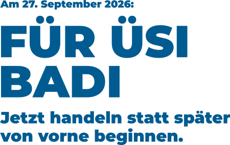

Finanzierung
Günstiger als Chlor
Die naturnahe Variante ist über die Zeit gerechnet die wirtschaftlichere Lösung für die Gemeinde – tiefere Betriebskosten als eine Chlorlösung.

Kein Chlor
Für alle Generationen
Erholung in der Natur
Am 27. September 2026: Jetzt handeln statt später von vorne beginnen.
JA zur Sanierung unserer Badi.
Beringen stimmt über die Sanierung der Badi im Chläggi ab. Das Pro-Komitee «Ja zur Badi» setzt sich für eine günstigere und zukunftssichere Lösung ein – mit Bioschnellfilter statt Chlor und einem Badeerlebnis wie in einem natürlichen See. Darum sagen wir JA.
Diese Argumente sprechen für die vorgeschlagene Sanierung unserer Badi.
Die naturnahe Variante ist über die Zeit gerechnet die wirtschaftlichere Lösung für die Gemeinde – tiefere Betriebskosten als eine Chlorlösung.
Die vorgeschlagene Variante ist kein Experiment, sondern setzt auf langjährig erprobte Technik aus der Trinkwasseraufbereitung. Wie im Technischen Bericht der Hunziker Betatech AG (PDF) belegt, liegt ein kostensicheres, bewilligungsfähiges Projekt vor. Das wahre Risiko einer Schliessung entsteht bei einem NEIN durch jahrelange Planungsverzögerungen.
Der Bioschnellfilter reinigt das Wasser ohne Chlor und ermöglicht eine einfache Entsorgung – ein Bad, das sich anfühlt wie ein natürlicher See.
Die Badi ist der grösste Treffpunkt der Gemeinde – ein Erlebnis für Kinder und Erholung für alle.
Fundierte Antworten und Fakten aus dem offiziellen Technischen Bericht zur Badi-Sanierung Beringen.
Nein, keineswegs. Im Gegensatz zum alten Pflanzenfilter beruht der Bioschnellfilter auf erprobter Stand-der-Technik-Filterung. Diese wird seit Jahrzehnten erfolgreich in der Trinkwasseraufbereitung eingesetzt. Wie im Technischen Bericht von Hunziker Betatech AG (PDF) dokumentiert, kommen 5 voll rückspülbare Filterbehälter mit Kunststoffträgern zum Einsatz. Ein Verstopfen (Kolmatieren) gehört damit dauerhaft der Vergangenheit an.
Ja, genau hier liegt das echte Risiko. Die bestehende Filteranlage ist verstopft und läuft an ihrer Belastungsgrenze. Ein NEIN löst kein Problem, sondern erzwingt ein ausarbeiten einer neuen Variante, das kostet Zeit und Geld und es wird wahrscheinlich eine teurere und aufwändigere Lösung als die vorliegende. Ein JA garantiert den Fortbestand unserer Badi.
Das erweiterte Vorprojekt wurde von Fachplanern (Hunziker Betatech AG und ASC Schweiz) mit einer Kostengenauigkeit von ± 15 % (nach SIA-Norm) kalkuliert. Der offizielle Technische Bericht (PDF) zeigt: Die Bioschnellfilter-Variante weist über den gesamten Lebenszyklus tiefere Betriebskosten auf als eine chemische Chloranlage.
Das Badewasser wird über 5 Bio-Schnellfilter umgewälzt (mit 4-fach höherer Leistung als bisher). Durch eine automatisierte Zudosierung einer natürlichen Glucose-Lösung (Zucker) wird die reinigende Biomasse im Filter gezielt genährt, um Phosphor und Organik abzubauen. Am Filterauslauf sorgt bei Bedarf eine UV-Bestrahlung für keimfreies Wasser ganz ohne Chlor.
Das Filter-Rückspülwasser (ca. 5 m³ pro Spülung alle 5–10 Wochen) wird geordnet in die Kanalisation abgeleitet. Bei Starkregen fließt überschüssiges Wasser aus dem Ausgleichsbecken völlig frei von Chemikalien oder Chlor gefahrlos in den Lieblosentalbach ab, wie in der Umweltrelevanzprüfung im Technischen Bericht (PDF) bestätigt wird.
Die Volksabstimmung über den Baukredit zur Sanierung der Badi Beringen im Chläggi findet am 27. September 2026 statt.
Flyer, Plakate und Inserate kosten Geld. Jede Spende hilft mit, dass unsere Botschaft in Beringen ankommt. Herzlichen Dank für deine Unterstützung!
Die Finanzierung der Kampagne wird über die EVP Schaffhausen abgewickelt. Spenden an die EVP Schaffhausen sind steuerlich absetzbar.
Erstellt von Reto Weber (Einwohnerrat EVP)